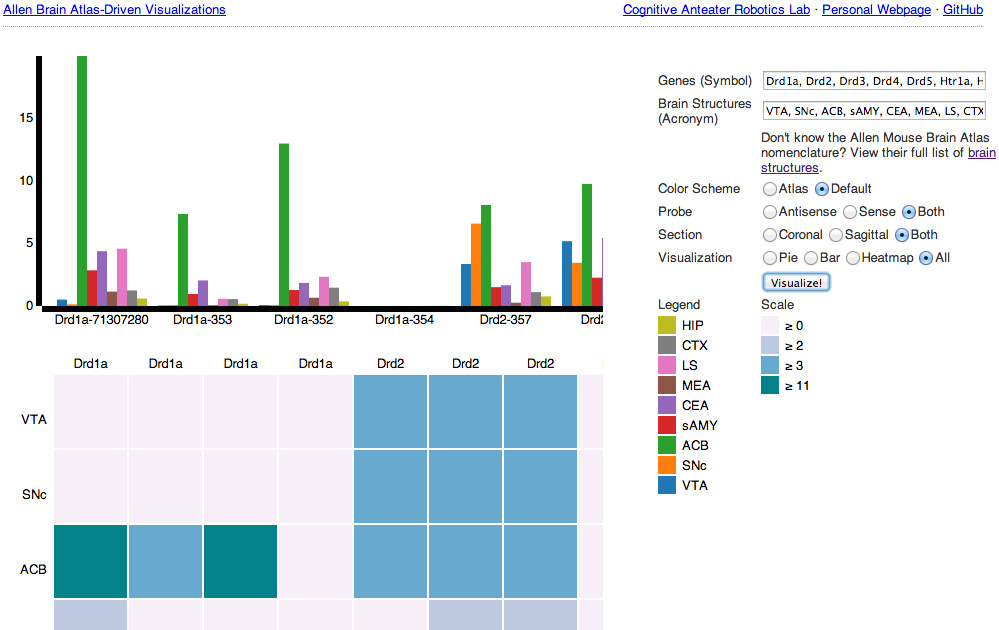

About Allen Brain Atlas-Driven Visualizations
Welcome to Allen Brain Atlas-Driven Visualizations (ABADV), a web-based application created for visualizing expression energy data from the Allen Brain Atlas (ABA).
ABADV combines the ABA Application Programming Interface (API), a resource enabling programmatic access to their dataset, with Data-Driven Documents (D3), a library that uses digital data to drive the creation and control of dynamic and interactive visualizations.Try ABADV!

{kind=link}
ABADV accepts only gene symbols and brain structure acronyms as its input. Symbols used to query genes in the Allen Mouse Brain Atlas follow the same guidelines established by the International Committee on Standardized Genetic Nomenclature for Mice, which you can find at Mouse Genome Informatics. Acronyms used to query brain structures in the Allen Mouse Brain Atlas are based on the Allen Reference Atlas.
ABADV was developed for Google Chrome.
News & Updates
April 15th, 2014
Significant changes to ABADV, including: the ability to now filter results by probe (antisense, sense or both), section (coronal, sagittal or both), and visualization (pie, bar, heatmap or all three); collecting all available visualizations into a single page so users don't bounce around between separate pages; and minor bug fixes (erroneous input, garbeled text and visuals, performance, etc.)
March 11th, 2014
Submitted a Methods article that explains how ABADV works to Frontiers in Neuroinformatics. The article is pending publication, but an abstract is available.
Feburary 10th, 2014
ABADV is launched and publicly avaiable through GitHub. ABADV is licensed under the MIT License (MIT).